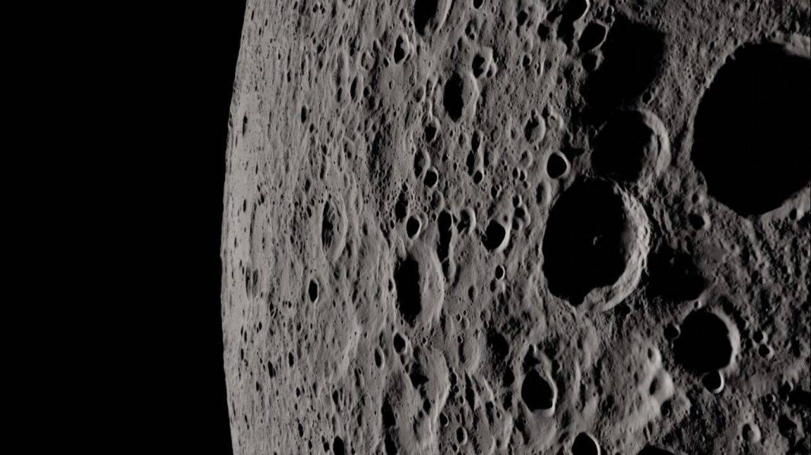

Lua
A aproximadamente 384.000 km de distância, a lua é um satélite natural da Terra, influenciando marés e inspirando a humanidade.
Saiba mais
Terra
Planeta Terra, terceiro do sistema solar. Com cerca de 12.742 km de diâmetro, é o lar da humanidade e tem aproximadamente 4,5 bilhões de anos.
Saiba mais
Jupiter
Júpiter, maior planeta do sistema solar, possui cerca de 139.820 km de diâmetro e está a uma distância de aprox. 588 milhões de km da Terra.
Saiba mais
Marte
Marte, o quarto planeta do sistema solar, tem cerca de 6.779 km de diâmetro. Está a uma distância média de aproximadamente 225 milhões de km da Terra.
Saiba mais